CNH Industrial ITC · Institute of Engineering & Management · University of Engineering and Management · IIIT Bangalore
Published at ICDAR 2025 — Document Analysis and Recognition
Document Layout Analysis (DLA) has advanced significantly in structured domains like invoices, forms, and academic papers. However, the layout understanding of educational content – especially question papers – remains largely underexplored. These documents are inherently multi-modal and hierarchical, containing a mix of textual structures like instructions, questions, answer blocks, and descriptions, often organized in complex multi-column formats.
HiLEx (Hierarchical Layout Extraction) is the first large-scale benchmark dataset designed specifically for understanding the layout of question paper images. It comprises 1,965 exam pages collected from eight major exams (GMAT, GRE, SAT, JEE, UPSC, GATE, BANK, and UGC-NET). Each page image is manually annotated with six hierarchical classes: Question_Paper_Area, Question_Block, Answer_Block, Question_Answer_Block, Instruction, and Description. Annotations are provided in both YOLO and COCO formats and were verified by expert annotators, achieving a gold-standard inter-annotator agreement (Cohen's κ > 0.90).
By enabling reliable layout extraction in educational contexts, HiLEx opens up opportunities for scalable document understanding, intelligent grading, and inclusive learning technologies. This aligns with broader goals of SDG 4 (Quality Education) and SDG 10 (Reduced Inequalities).
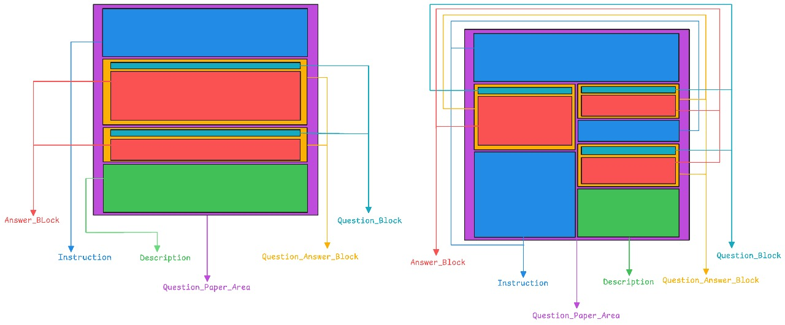
The HiLEx dataset is a curated benchmark for hierarchical layout analysis in educational documents, specifically designed for question papers that exhibit diverse and complex visual structures. It addresses a major gap in existing DLA benchmarks by targeting the education domain—an area rich in practical use cases like exam digitization, automated grading, and content retrieval.
Each document image is annotated with a six-class hierarchical layout schema:
This hierarchy captures the structured and nested nature of question papers across both single-column and multi-column layouts.
All annotations were performed manually by three domain experts, followed by multi-phase quality control. Final annotations achieved Cohen's κ > 0.90, indicating very high inter-annotator agreement and reliability.
HiLEx includes exam content from both national and international assessments, supporting cross-cultural analysis. The dataset is publicly available under the Creative Commons Attribution 4.0 (CC BY 4.0) license.
GitHub: HiLEx-DLA/HiLEx
The repository provides:
To evaluate the effectiveness of the HiLEx dataset, we benchmarked a diverse set of object detection models spanning multiple architectural paradigms. Each model was trained to detect the six hierarchical layout categories within question paper images, enabling a thorough comparison of their capabilities on this task.
We grouped the evaluated models into four families:
Fast, single-pass detectors that directly predict bounding boxes and classes in one go.
Examples: YOLOv8, YOLOv9, YOLOv10, YOLOv11, YOLOv12
Region proposal-based model that first finds object regions, then classifies them.
Example: Detectron2 (Faster R-CNN backbone)
Encoder-decoder models with object query mechanisms for global context object detection.
Examples: DETR, RT-DETR
Pre-trained multi-modal models that understand images and text jointly, allowing zero-shot layout detection.
Examples: Florence-2, PaLI-Gemma2
All models were trained under consistent settings to ensure a fair comparison:
A typical evaluation pipeline included image pre-processing (resizing and normalization), model inference to obtain bounding boxes for each class, metric computation (IoU, precision, recall for each class and overall), and error analysis and class-wise performance breakdown.
We evaluated HiLEx across a diverse set of models representing four major detection paradigms: one-stage, two-stage, transformer, and vision-language. All models were trained and tested on the same dataset split and evaluation criteria to ensure comparability.
Question_Paper_Area and Question_Answer_Block were consistently detected with high precision across models, likely due to their large size and distinctive structure. In contrast, Instruction and Description were the most challenging classes – many models struggled to detect these smaller, variably formatted elements, leading to lower recall for those classes.
Common errors included over-detection in densely packed answer sections (multiple boxes around the same answer block) and missed instructions when their font style or placement differed from training examples. Vision-language models occasionally confused descriptions for question text blocks. These insights point to areas for future improvement, such as specialized handling of instruction text and better differentiation between similar text elements.
HiLEx features richly annotated pages with diverse layouts – from dense multi-column competitive exams to simpler single-question formats. Below we present key visual examples illustrating the dataset and model performance.
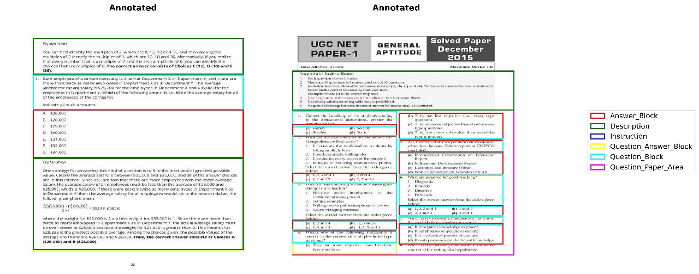
Single-Column vs Multi-Column: HiLEx includes both single-column papers and multi-column layouts. The annotations adapt to each style, capturing blocks appropriately in each format.
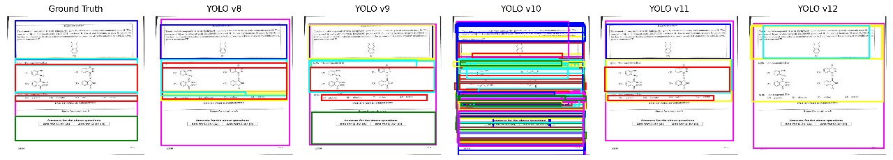
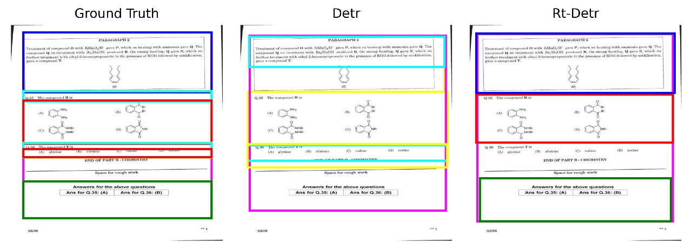
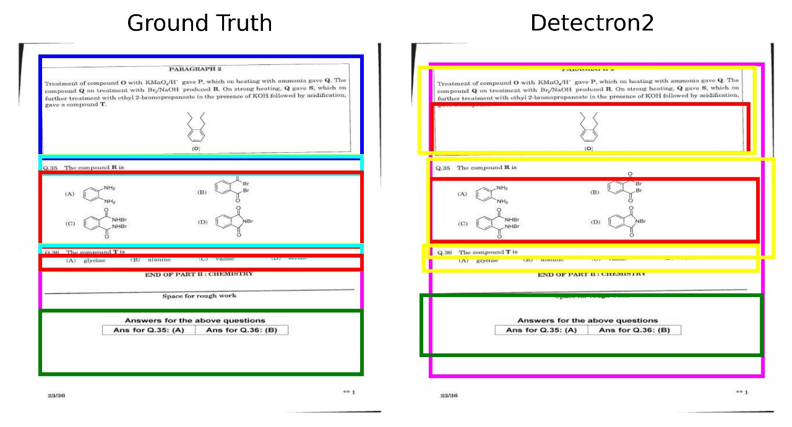
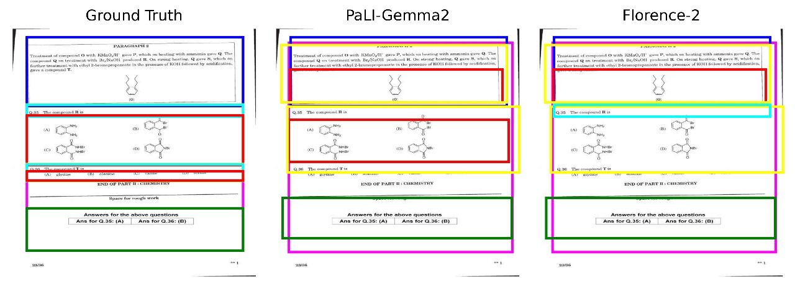
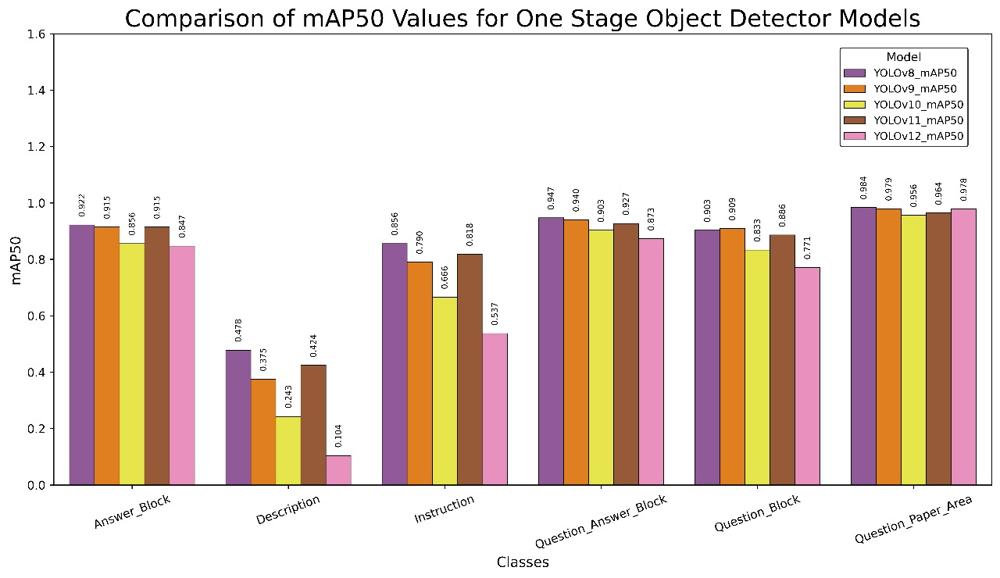
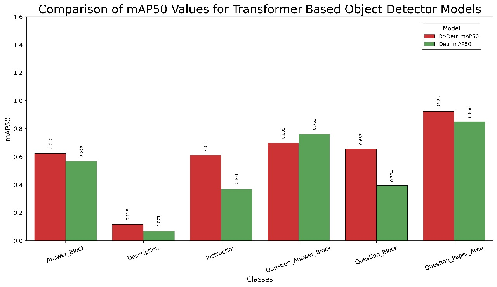
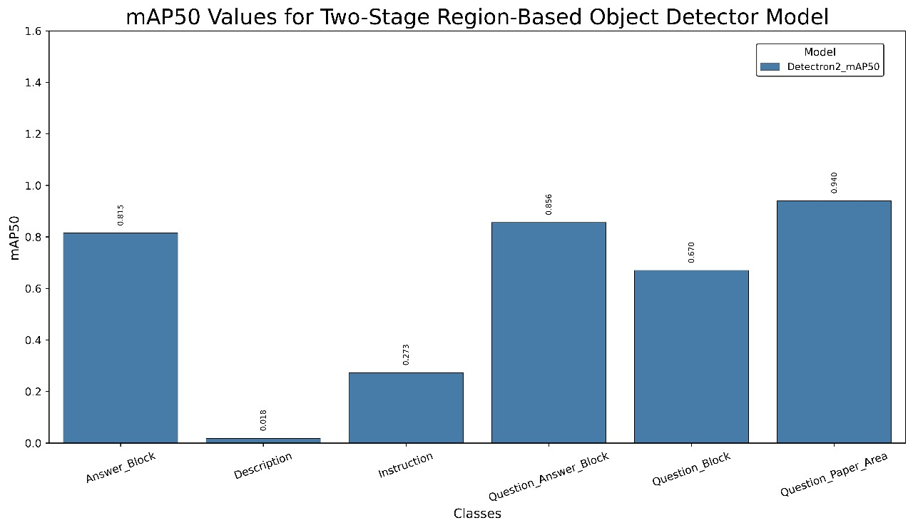
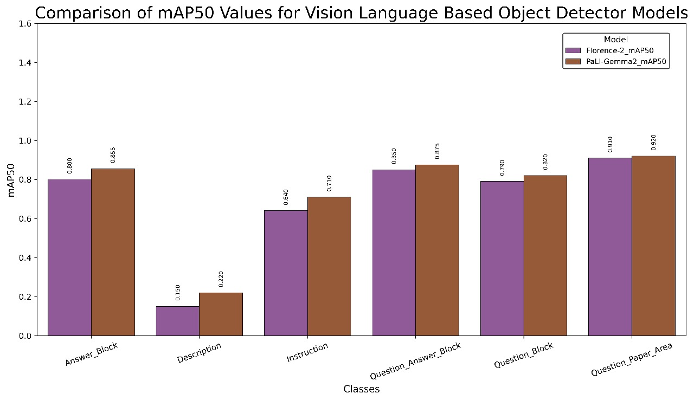
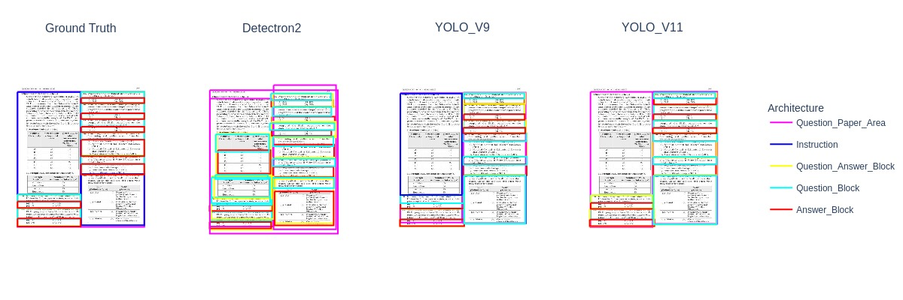
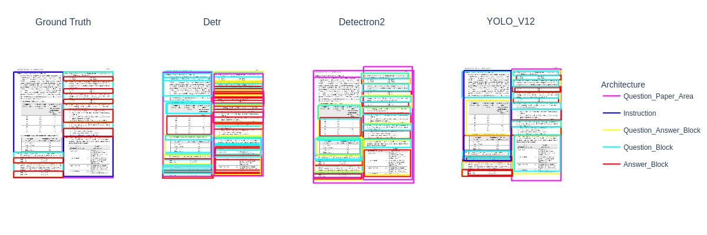
The table below presents the benchmarking results of various models on the HiLEx dataset. All models were trained on the same training set and evaluated on an identical test set covering all six layout classes.
| Model | Type | Training | Params | mAP@50 | mAP@50–95 |
|---|---|---|---|---|---|
| Detectron2 | Two-Stage | Fine-tuned | ~41M | 94.0% | 67.3% |
| YOLOv8 | One-Stage | Fine-tuned | ~35M | 84.8% | 66.1% |
| PaLI-Gemma2 | Vision-Language | Zero-shot | >1B | 83.5% | 59.0% |
| YOLOv11 | One-Stage | Fine-tuned | ~50M | 82.2% | 68.9% |
| Florence-2 | Vision-Language | Zero-shot | >1B | 81.0% | 59.0% |
| RT-DETR | Transformer | Fine-tuned | ~50M | 60.6% | 44.8% |
| DETR | Transformer | Fine-tuned | ~86M | 50.2% | 35.0% |
Note: All metrics are averaged across the six layout classes. Vision-Language models (Florence-2, PaLI-Gemma2) were evaluated in zero-shot mode (no fine-tuning on HiLEx).
If you evaluate a new model on HiLEx and wish to be listed on the leaderboard, open a Pull Request on the GitHub repository with your model name, type, parameter count, training mode, and mAP scores. Our team will review and merge verified results.
HiLEx: Image-based Hierarchical Layout Extraction from Question Papers
Published in: Document Analysis and Recognition – ICDAR 2025, Springer Nature Switzerland, pp. 485–505
Authors: Utathya Aich, Shinjini Chakraborty, Deepan Sadhukhan, Swarnendu Ghosh, and Tulika Saha
📄 Paper on Springer | 💻 GitHub Repo
Education is the cornerstone of societal progress, yet automated document layout understanding in the education domain remains significantly under-explored, with most research focusing on individual components like texts, tables, and images instead of a holistic understanding. Despite the increasing demand for AI-driven assessment, digitization, and retrieval of educational resources, very few dedicated works exist for question paper layout analysis, a critical component of automated learning systems. To bridge this gap, we introduce the first dataset HiLEx, explicitly designed for structure analysis and layout extraction from question paper images. The HiLEx dataset is curated from eight diverse examination formats. With over 1,900 annotations with different structural layouts, covering both single-column and multi-column layouts, it ensures robust generalization across different structural variations. We conduct a thorough empirical study with contemporary object detection models, exposing their limitations in structural understanding and format generalization. Our findings lay the groundwork for Smart AI solutions in education, fostering automated grading, question retrieval, and equitable learning access.
If you use the HiLEx dataset, benchmarks, or tools in your research, please cite our paper:
@InProceedings{10.1007/978-3-032-04627-7_28,
author = {Aich, Utathya and Chakraborty, Shinjini and Sadhukhan, Deepan and Ghosh, Swarnendu and Saha, Tulika},
editor = {Yin, Xu-Cheng and Karatzas, Dimosthenis and Lopresti, Daniel},
title = {HiLEx: Image-Based Hierarchical Layout Extraction from Question Papers},
booktitle = {Document Analysis and Recognition -- ICDAR 2025},
year = {2026},
publisher = {Springer Nature Switzerland},
address = {Cham},
pages = {485--505},
isbn = {978-3-032-04627-7}
}The HiLEx project is a collaborative effort by researchers working at the intersection of document analysis, computer vision, and educational AI. We welcome feedback, collaboration inquiries, and contributions.
| Name | Affiliation | |
|---|---|---|
| Utathya Aich | CNH Industrial ITC, India | us4decaich@gmail.com |
| Shinjini Chakraborty | Institute of Engineering & Management / University of Engineering and Management, India | shinjinic05@gmail.com |
| Deepan Sadhukhan | Institute of Engineering & Management / University of Engineering and Management, India | sadhukhandeepan@gmail.com |
| Swarnendu Ghosh | Institute of Engineering & Management / University of Engineering and Management, India | dr.swarnendu.ghosh@gmail.com |
| Tulika Saha (Corresponding) | International Institute of Information Technology Bangalore, India | sahatulika15@gmail.com |
General Inquiries: us4decaich@gmail.com
GitHub Issues: HiLEx-DLA/HiLEx